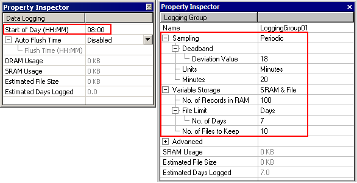
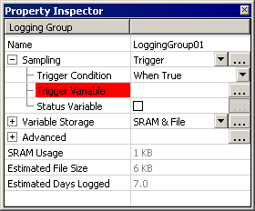

|
|
|
|
|
|
|
|
Before you begin data collection, you need to prepare the system for data logging.
In the Data Logging Group Property Inspector, you can specify:
How frequently data logging will occur (periodic sampling), or
What will trigger data to be logged (trigger sampling).
To prepare the system for data logging, you must make sure of the following:
The data being logged is older than the current system time.
The data being logged is the same as the current Start of Day setting.
The Start of Day is not changed while logging data.
If the above requirements are not met, the following message displays: "Incompatible data logging files are detected and renamed." When this occurs, the data logging files that already exist will have the word "OLD" appended to it. You can delete the existing data logging files and start data logging again.
The periodic data collection method gives you a snapshot of the data at regular time intervals, for example, every 15 minutes or every hour. The time intervals (in hours, minutes, or seconds) you set specify a point in time in which data is captured. The following table displays the allowable time intervals you can set over a period of one day, one hour, or one minute.
|
Unit |
Available Time Intervals for Data Logging to Occur |
|
Hours |
1, 2, 3, 4, 6, 8, 12, 24 |
|
Minutes |
1, 2, 3, 4, 5, 6, 10, 12, 15, 20, 30 |
|
Seconds |
1, 2, 3, 4, 5, 6, 10, 12, 15, 20, 30 |
Data logging occurs when Runtime starts, logging only those variable values that have changed or, if deadband is enabled, those variable values that exceed the deadband deviation value from the last record. Using the 24-hour time notation, in the Start of Day property you can specify the start time to collect data for storage in a data file.
For example, Runtime starts at 6:00am at AAA Company. The company has defined the Logging Group's settings as follows, starting the month of April:
Start of Day is 8:00am
Deadband Deviation Value is 18
Sampling frequency is every 20 minutes
Number of days to collect data records is 7 days.

The property settings from the example indicates that data sampling will occur every 20 minutes, starting at 6:20am on April 1, and occurring again at 6:40am, 7:00am, 7:20am, 7:40am, 8:00am, 8:20am, and so on. Since Start of Day was set to 8:00am, data collected between 8:00am of April 1 and 7:59am of April 8 is stored in one data file. Data collected before 8:00am (Start of Day) on April 1 is stored in the previous data logging file. Another data file is created to store data collected from 8:00am of April 8 to 7:59am of April 15, and continues on until the Data Logging settings are changed.
Since deadband is enabled in the example, a new record logs when the variable value exceeds the deviation value from the last record. If the previous variable value was 249 and the deviation value is set to 18, no new record logs if the variable value of the current sample falls within 231 and 267. However, if the value is less than 231 or greater than 267, a new record logs.
New data files are created depending on how you set the File Limit property. If set to Days, as described in the above example, you can specify how many days' worth of data records you want to collect in a file. If set to Size, a new file is created once the specified file size is exceeded.

From the above example, it is important to note that data records collected on April 8 is stored in two different data files. Data records collected prior to 8:00am is stored in one data file, and data records collected after 8:00am is stored in another data file. You would need to take this into account when using the Data Manager tool to:
Retrieve data files. If you retrieve data from April 8 to April 14, the data for April 8 would be from 8:00am to 12:00pm. Data for April 9 to April 14 would be from 12:00am to 11:59pm.
Delete data files. If you want to remove data records from April 7 to April 8, you would be removing two data files and two weeks' data. This is because one file contains data records prior to 8:00am of April 8, and another file contains data records after 8:00am of April 8.
For more information on how to use the Data Manager tool to manage your data logging files, see Section 20.5.2.2, Retrieving Files from a Target.
The minimum logging interval is one second. However, setting a small value to the logging interval may potentially cause more frequent updates to the logged data, which increases the total number of inputs and outputs. Consequently, this activity reduces the availability of the CPU for other, possibly more critical, operations.
If your logging intervals are very short, a larger number of data samples may potentially be collected. This may result in increased CPU use and may affect the performance of other operations. The optimal logging interval depends on the specifications of the target machine and application.
Also, if you are planning to use a very short logging interval, make sure you perform a test before going into a production environment to determine if the interval is appropriate. The optimal logging interval may differ depending on the target machine and CPU time required by the user application.
The trigger data collection method takes a snapshot of the data when the trigger is activated. You would typically select trigger sampling if you want to have tighter control over when data is to be collected. For example, you may want to sample data at a very specific time in order to collect some very specific data. Trigger sampling gives you the maximum flexibility to schedule data sampling as required.
If you select trigger sampling, it is recommended that you use Plot Trend Graphs. If you select trigger sampling to use on a Real-Time or Historical Trend Graph, the data may not appear correctly or at all, because the graph expects the time between each data point to be constant.
To set up trigger sampling, you must define the trigger condition, trigger variable and if needed, a status variable.

The trigger variable, which can be an Integer variable, BOOL variable or expression, controls when the data collection operation takes place. The trigger condition (When True, When False, or On Data Change) defines how this variable will trigger the operation.
When True. Whenever a trigger variable changes from 0 (False) to any value (True), data collection is triggered.
When False. Whenever a trigger variable changes to 0 (False) from any value (True), data collection is triggered.
On Data Change. Whenever the trigger variable changes in value, data collection is triggered.
The status variable informs you when data collection is taking place and when it is completed. You can specify an integer or BOOL value in the status variable. When data collection is triggered, the status variable is set to 1 (True). When data collection is completed, the status variable changes from 0 to any value. When the trigger variable is cleared, the status variable is 0 (False).